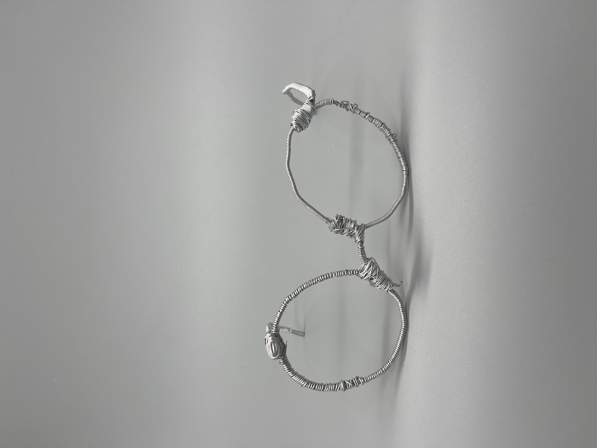
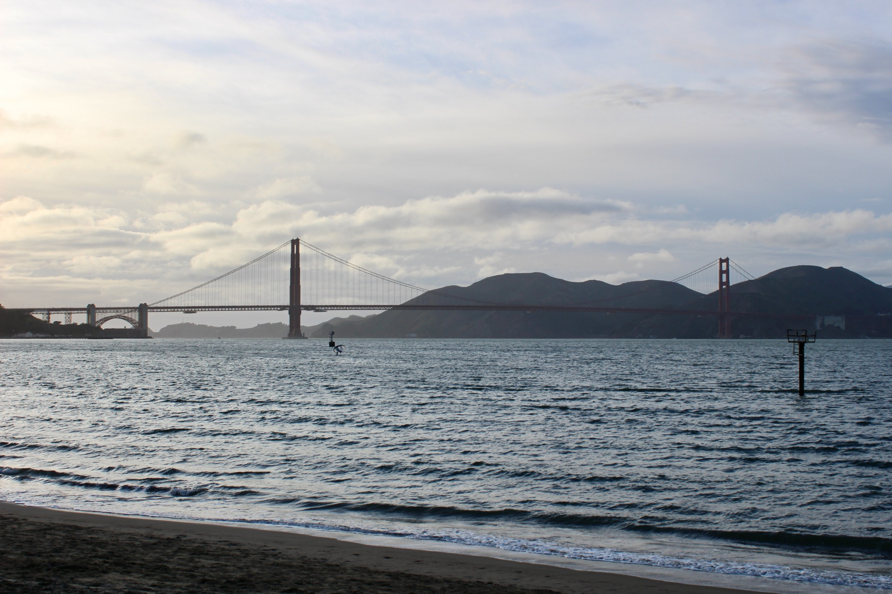
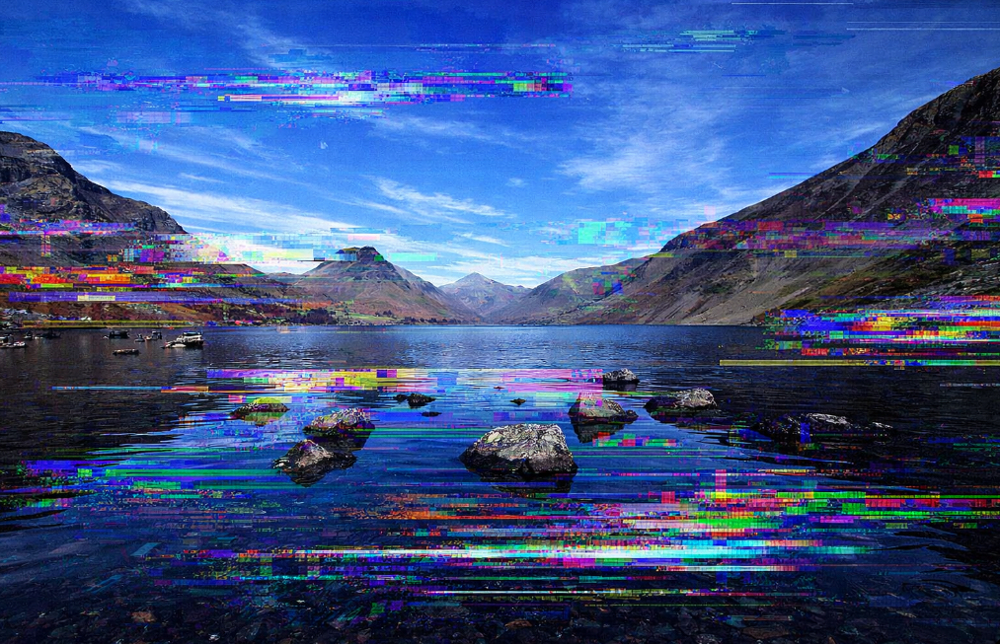
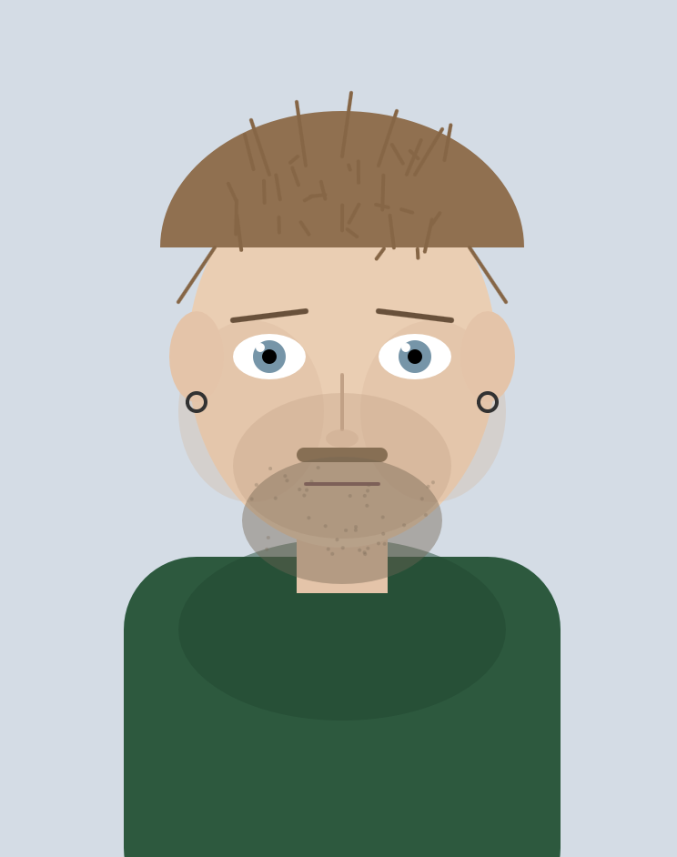
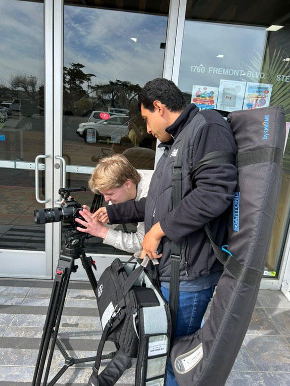

Plaster Bandage Form
April 2026 — Material exploration using plaster bandage to build form, texture, and presence.
I work across photography, code, sculpture, screenwriting, and digital media. This portfolio brings together academic projects and independent work that reflect experimentation, material process, and strong visual composition.
I work across photography, code, sculpture, screenwriting, and digital media. This portfolio brings together academic projects and independent work that reflect experimentation, material process, and strong visual composition.
I am a digital media student at San Jose State, with a B.A. pending, and I also have a background in film at Monterey. My work moves between digital and physical practices, combining image-making, creative coding, writing, and material experimentation.

Plaster work and wearable sculpture grouped as physical and object-based projects.
April 2026 — Material exploration using plaster bandage to build form, texture, and presence.
February 2026 — A wearable sculpture focused on structure, movement, and translating sketch ideas into 3D form.

A mix of assignment-based contact sheets and selected images from the gallery.
A selected photo gallery of landscapes, portraits, architecture, objects, and visual studies.

Creative coding, glitch experimentation, p5.js work, and an interactive soccer game.

Explores digital corruption and file misuse as a way of revealing hidden structures inside digital media.

A self-portrait built with code using geometry, abstraction, and layered color.
An interactive soccer game built in p5.js with responsive movement, simple controls, and fast-paced gameplay.

Screenwriting work, including short scripts and a workplace comedy pilot.
An older man is pulled back into unresolved childhood trauma when Valerie arrives with news that Andy, long believed lost, may still be alive.
A broke teenager drags his friends into an abandoned military building hoping to find treasure, only for the adventure to turn reckless and ridiculous.
Two teenage boys who break into cars are forced to return a stolen purse, briefly facing consequences before falling back into the same pattern.
A chaotic country club wedding becomes the center of a workplace comedy about a disastrous shift, a missing bride, and a failed membership tour.
This project adds energy to the portfolio by showing how I work with movement, timing, and interaction instead of only static images or objects.
Reach me directly by email.
This portfolio highlights photography, code, sculpture, screenwriting, and experimental media in a colorful neo-brutalist format.